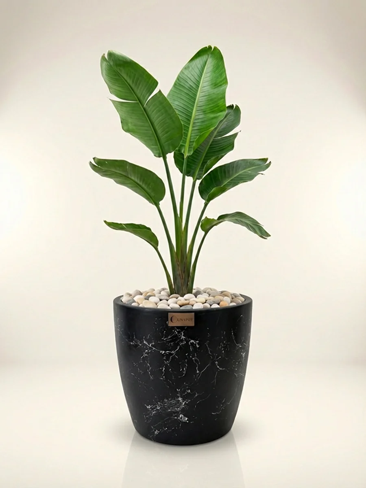

Formuna bak.
İçini de keşfet.
Nova’nın yuvarlak hatları, Luna’nın ince silüeti. Dışarıda farklı bir karakter; içeride düşünülmüş bir yapı.
 ↗
↗NOVA
Yumuşak form, güçlü karakter. Koleksiyonu tanı.

↗LUNA
Sade bir duruş, kendine özgü bir doku. Koleksiyonu tanı.
İKİ ANLATIM, TEK SİSTEM.
Katman katman Lunapot.
Bitki yerleşimini veya fiberglass gövdeyi seç. Adımlara dokunabilir, anlatımı oynatabilir ve GIF olarak indirebilirsin.
Kendi formunu bul.
Artık yapısını biliyorsun. Mağazada seçenekleri ve fiyatları birlikte incele.
Saksı mağazasına geç ↗